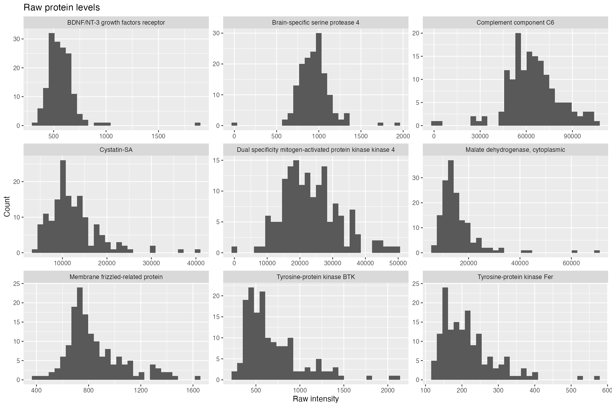
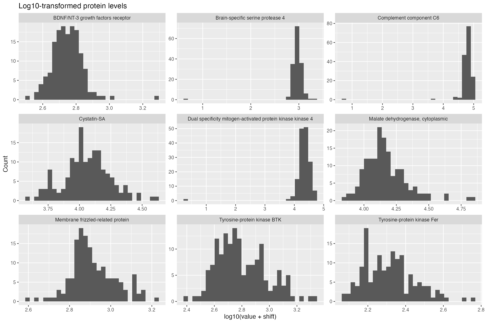
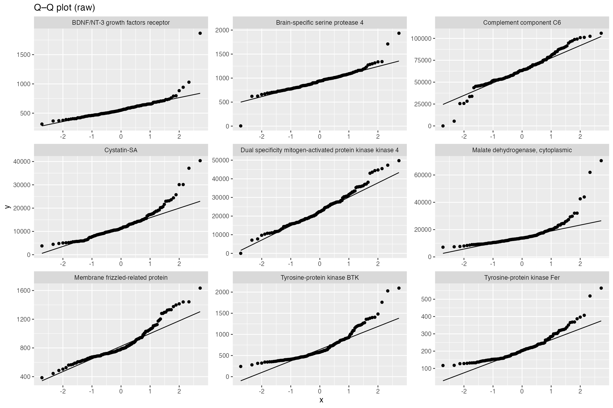
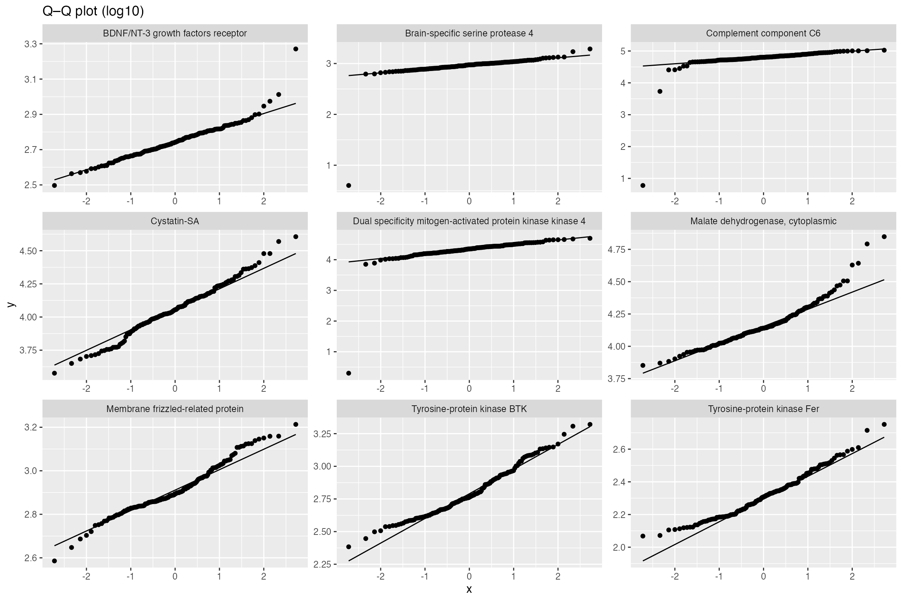
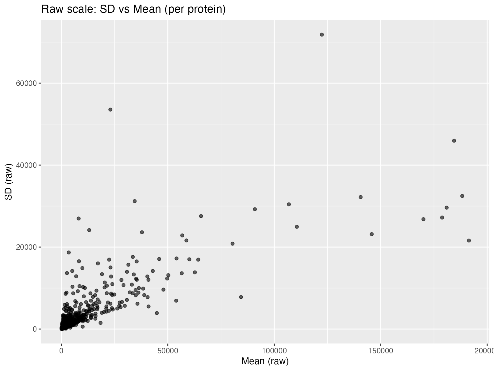
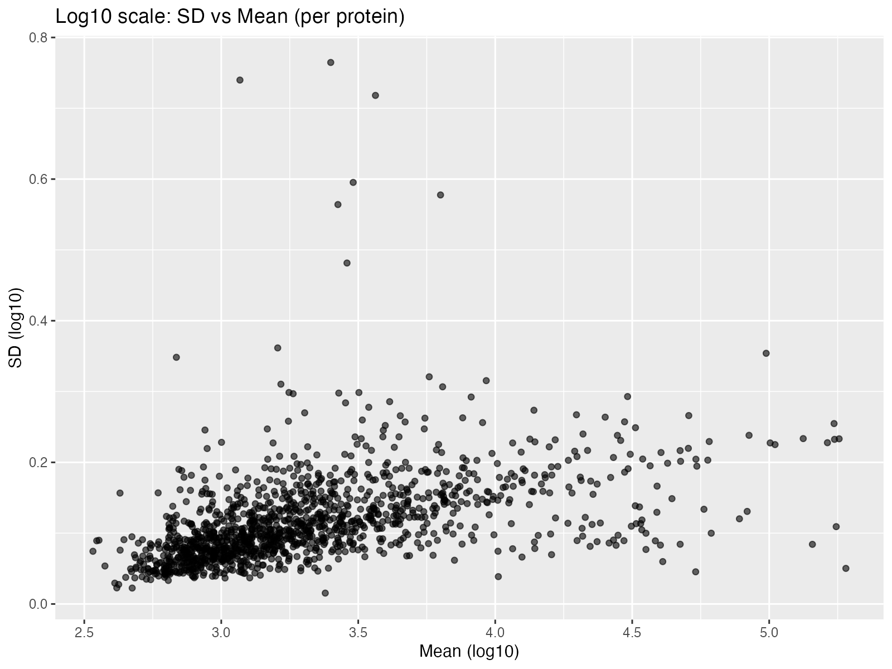
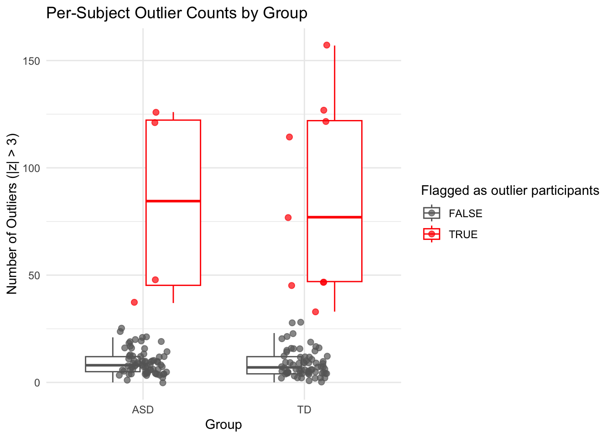

Biomarkers of ASD
Evaluating the impact of preprocessing, outlier detection, and selection strategies on ASD biomarker accuracy
Abstract
In this proteomics analysis of 154 boys and 1,317 serum proteins, we examined biomarkers for distinguishing autism spectrum disorder (ASD) from typically developing (TD) controls and tested how different modeling choices affected results. After log10 transformation, z-scoring, and ±3 SD trimming, the baseline model used t-tests and Random Forests to select the top 10 proteins from each method, intersecting on five (DERM, RELT, MRC2, IgD, Cadherin-5). Logistic regression on these achieved 77.4% accuracy and 88.3% AUC. Three variations showed that (1) doing feature selection only on training data reduced performance (68.8% accuracy, 71.5% AUC), (2) expanding to the top 25 proteins improved it (83.9% accuracy, 95.0% AUC), and (3) using a fuzzy intersection (union) lowered it (67.7% accuracy, 78.3% AUC). A simpler LASSO model with cross-validation selected three proteins (DERM, IgD, eIF-4H), giving 67.7% accuracy and 75.8% AUC with higher specificity (86.7%) but lower sensitivity (50.0%). Overall, the five-protein baseline best balances sensitivity and specificity, while the LASSO model shows that a smaller panel can still perform reasonably well, highlighting a trade-off between simplicity and performance.
Dataset
A total of 154 pediatric subjects were enrolled in the study, consisting of 76 boys with autism spectrum disorder (ASD; mean age 5.6 years, SD 1.7) and 78 typically developing (TD) boys (mean age 5.7 years, SD 2.0). The ethnic distribution was 73 White/Caucasian, 32 Hispanic/Latino, 17 African American/Black, 5 Asian or Pacific Islander, 23 of multiple or other ethnicities, and 4 not reported. Autism Diagnostic Observation Schedule (ADOS) scores were also collected for all participants.
Serum protein expression was measured using the SOMAscan® assay, which quantified 1,317 proteins in 150 μl serum from 154 participants. An additional 14 blinded duplicate samples (7 ASD, 7 TD) were run for quality control but not included in analyses. In the published study, 192 proteins were removed during quality control, leaving 1,125 for analysis. The dataset used here retains all 1,317 raw protein measurements prior to filtering. These proteins span a broad range of functional classes, including cytokines, growth factors, receptors, and signaling molecules. Protein levels were reported as relative fluorescence units (RFUs), reflecting their relative abundance.
Preprocessing for the present analysis involved three main steps applied to all protein measures: a log10 transform to stabilize variance and reduce skew, z-score standardization (mean 0, SD 1) to place proteins on a comparable scale, and trimming at ±3 SD to cap extreme outliers. After these transformations, the dataset was organized with group and ados leading, followed by the processed protein features, and saved in R binary format (biomarker_clean) for downstream statistical analysis.
Summary of published analysis
The study by Hewitson et al. (2021) aimed to identify serum protein biomarkers that could distinguish children with autism spectrum disorder (ASD) from typically developing (TD) controls. Blood samples from 154 male children (76 ASD and 78 TD) were analyzed using the SOMAscan® 1.3K proteomic platform, which quantified 1,317 serum proteins. After quality control procedures excluded 192 proteins, the remaining 1,125 were log transformed, standardized to z-scores, and values beyond ±3 standard deviations were trimmed to reduce the influence of extreme outliers.
Three feature selection approaches were applied: two-sample t-tests comparing ASD and TD groups, random forest importance rankings, and Spearman correlations between protein levels and ADOS scores. From each method, the ten most informative proteins were selected, and the overlapping set across all three approaches consisted of IgD, suPAR, MAPK14, EPHB2, and DERM, which defined the core panel.
Logistic regression models were then used to evaluate classification performance and to assess whether adding additional proteins could improve accuracy. Four additional proteins, ROR1, GI24, eIF-4H, and ARSB, each improved classification performance when added to the five-protein core set. The combined nine-protein optimal panel achieved an AUC of 86% (sensitivity 83%, specificity 84%).
Workflow of Hewitson et al. (2021) Biomarker Analysis
Findings
Summarize your findings here. I’ve included some subheaders in a way that seems natural to me; you can structure this section however you like.
Impact of preprocessing
Log-transformation of protein intensities
To assess the effect of log-transformation, I compared raw versus log10-transformed protein intensities.
On the raw scale, most proteins were strongly right-skewed (median skew ≈ 2.0).
After applying the log10 transform (with a small positive shift for non-positive values), distributions became substantially more symmetric (median skew ≈ 0.2).
About 70 % of proteins showed reduced absolute skewness, and the relationship between the mean and standard deviation was much weaker, indicating partial variance stabilization.
Overall, the log10 transformation reduces skewness, tames extreme high values, and stabilizes variance—important for statistical models that assume approximate normality and homoscedasticity.






Outliers Analysis
Outlier analysis of per-subject counts (|z| > 3) showed that ASD and TD groups had similar medians (both 8.5; Wilcoxon p = 0.82), but TD participants exhibited greater dispersion with higher means, larger maxima, and a heavier right tail. Using Tukey’s 1.5×IQR rule, 9 of 78 TD participants (11.5%) were flagged as outliers compared to 4 of 76 ASD participants (5.3%). Overall, while the central tendency of outlier counts was similar across groups, extreme outlying subjects were more common in the TD group.
Group summaries
We computed a per-subject outlier count as the number of proteins with (|z|>3) after log10 transformation and z-scoring. The first table summarizes these counts by group (ASD vs TD), reporting (N), mean, median, SD, and range. Both groups had similar medians (8.5), but TD subjects showed greater variability, with a higher mean (17.6 compared to 13.3) and a wider range of values (0–157 versus 0–126). The second table shows how often subjects exceeded selected thresholds (≥10, 25, 50, 100, and 200 outliers). Across all thresholds, a larger proportion of TD participants were above each cutoff, indicating more frequent extreme outlier counts. Together, these summaries show that while the typical number of outliers per subject was comparable between groups, the TD distribution extended further to the right, with a slightly larger number of subjects showing unusually high outlier counts.
| group | N | Mean | Median | SD | Min | Max |
|---|---|---|---|---|---|---|
| ASD | 76 | 13.25 | 8.5 | 19.82 | 0 | 126 |
| TD | 78 | 17.59 | 8.5 | 29.25 | 0 | 157 |
| group | threshold | num_at_or_above | N | proportion |
|---|---|---|---|---|
| ASD | 10 | 33 | 76 | 0.434 |
| TD | 10 | 31 | 78 | 0.397 |
| ASD | 25 | 5 | 76 | 0.066 |
| TD | 25 | 11 | 78 | 0.141 |
| ASD | 50 | 2 | 76 | 0.026 |
| TD | 50 | 5 | 78 | 0.064 |
| ASD | 100 | 2 | 76 | 0.026 |
| TD | 100 | 4 | 78 | 0.051 |
| ASD | 200 | 0 | 76 | 0.000 |
| TD | 200 | 0 | 78 | 0.000 |
Descriptive distributions (histogram & boxplot)
The histogram of per-subject outlier counts shows that both ASD and TD groups cluster around similar values, but the TD group has a heavier right tail, with more subjects showing very high counts. The boxplot confirms this: medians are identical across groups, but TD participants show greater spread and more extreme high values. Tukey-flagged outlier participants are visible as red points in the boxplot.


Group Comparisons of Outlier Counts
The Wilcoxon rank-sum test showed no significant difference in median outlier counts between ASD and TD participants ((W = 3028.5), (p = 0.82)). Using Tukey’s 1.5×IQR rule, 9 of 78 TD participants (11.5%) and 4 of 76 ASD participants (5.3%) were flagged as outliers. The chi-square test comparing these proportions was not significant, indicating that while extreme subjects occurred in both groups, they were slightly more common among TD participants without reaching statistical significance.
| test | W | p_value |
|---|---|---|
| Wilcoxon rank-sum | 3028.5 | 0.8166471 |
| group | is_outlier | n | prop |
|---|---|---|---|
| ASD | FALSE | 72 | 0.9473684 |
| ASD | TRUE | 4 | 0.0526316 |
| TD | FALSE | 69 | 0.8846154 |
| TD | TRUE | 9 | 0.1153846 |
| Group | FALSE | TRUE |
|---|---|---|
| ASD | 72 | 4 |
| TD | 69 | 9 |
| test | statistic | df | p_value |
|---|---|---|---|
| Chi-square test of independence | 1.233372 | 1 | 0.2667523 |
Overall interpretation
- Both groups share a similar central tendency (same medians, Wilcoxon not significant).
- The TD group shows greater dispersion and heavier tails, including more extreme subjects.
- Using Tukey’s rule, a larger proportion of TD participants were classified as outliers compared with ASD.
Outlier Analysis Conclusion: While typical participants look similar in ASD and TD, extremely outlying individuals are more common in the TD group.
Methodological variations
We were then tasked to find out what happens to the model under these 3 modifications:
1) Repeat the analysis but carry out the entire selection procedure on a training partition – in other words, set aside some testing data at the very beginning and don’t use it until you are evaluating accuracy at the very end.
2) Choose a larger number (more than ten) of top predictive proteins using each selection method.
3) Use a fuzzy intersection instead of a hard intersection to combine the sets of top predictive proteins across selection methods.
Original Model:
The original model produces the following result:
ASD TD class.error
ASD 49 27 0.3552632
TD 21 57 0.2692308# A tibble: 4 × 3
.metric .estimator .estimate
<chr> <chr> <dbl>
1 sensitivity binary 0.812
2 specificity binary 0.733
3 accuracy binary 0.774
4 roc_auc binary 0.883RF OOB Error: Based on all 154 subjects.
Final Accuracy: 77.4%
Final AUC: 88.3%
One problem from this method is that the feature selection was performed on the entire data set before splitting. This means the selection process “peeked” at the test data, choosing features that were already known to work well on it. This inflates the final score. The other methods would have a lower score than this.
Variation 1:
Repeat the analysis but carry out the entire selection procedure on a training partition – in other words, set aside some testing data at the very beginning and don’t use it until you are evaluating accuracy at the very end.
ASD TD class.error
ASD 39 21 0.3500000
TD 16 46 0.2580645# A tibble: 4 × 3
.metric .estimator .estimate
<chr> <chr> <dbl>
1 sensitivity binary 0.562
2 specificity binary 0.812
3 accuracy binary 0.688
4 roc_auc binary 0.715RF OOB Error: Based on the smaller training set (122 subjects)
Final Accuracy: 68.8%
Final AUC: 71.5%
The accuracy and AUC dropped a lot. This 68.8% accuracy is the honest and realistic score. The ~9-point drop in accuracy reveals the cost of data leakage. The original model was much more optimistic, and this model leads to more truthful results.
Variation 2:
Choose a larger number (more than ten) of top predictive proteins using each selection method. Decided to use n=25 instead of n=10.
ASD TD class.error
ASD 49 27 0.3552632
TD 21 57 0.2692308# A tibble: 4 × 3
.metric .estimator .estimate
<chr> <chr> <dbl>
1 sensitivity binary 0.75
2 specificity binary 0.933
3 accuracy binary 0.839
4 roc_auc binary 0.95 RF OOB Error: Based on all 154 subjects
Final Accuracy: 83.9%
Final AUC: 95.0%
How it was affected: The accuracy and AUC increased dramatically
This suggests that the original model (n=10) was underfit. The features ranked 11-25 still contained valuable information. The model became more complex and could capture more of the underlying signal by including them which leads to better performance.
Variation 3:
Use a fuzzy intersection instead of a hard intersection to combine the sets of top predictive proteins across selection methods.
The chnage was using union() for a “fuzzy intersection” instead of intersection.
ASD TD class.error
ASD 49 27 0.3552632
TD 21 57 0.2692308# A tibble: 4 × 3
.metric .estimator .estimate
<chr> <chr> <dbl>
1 sensitivity binary 0.562
2 specificity binary 0.8
3 accuracy binary 0.677
4 roc_auc binary 0.783RF OOB Error: Based on all 154 subjects
Final Accuracy: 67.7%
Final AUC: 78.3%
How it was affected: The accuracy and AUC dropped significantly
This shows the danger of overfitting. The original intersection is a strict filter and keeps only high confidence features that both methods agreed on, while the union is a permissive filter and keeps features that either method liked. The union added more noise than signal and caused the model to drop in performance.
Improved classifier
Motivation: Seeking a simpler biomarker panel
While the in-class analysis identified a 5-protein panel with strong classification accuracy (77.4% accuracy, 88.3% AUC), clinical translation of biomarker panels benefits from simplicity. Fewer proteins mean lower assay costs, faster turnaround times, and reduced technical variability. We therefore sought to identify a minimal protein panel that maintains comparable diagnostic performance.
Approach: LASSO regularization for automatic feature selection
We employed LASSO (Least Absolute Shrinkage and Selection Operator) regression, a penalized logistic regression method that performs automatic feature selection via L1 regularization. LASSO works by adding a penalty term proportional to the absolute value of coefficients, which shrinks less important features exactly to zero, effectively removing them from the model. This makes LASSO particularly well-suited for high-dimensional biomarker data where interpretability and parsimony are valued.
Our methodological workflow consisted of five steps:
Baseline replication: We first replicated the in-class analysis to establish benchmark performance metrics using the same random seed and procedures.
Candidate expansion: Rather than using only the strict intersection of t-test and Random Forest top-10 lists (which yielded 5 proteins), we used the union of both lists to create a larger candidate pool (15 proteins total). This gave LASSO more features to consider while still focusing on biologically relevant candidates.
LASSO feature selection: We applied 10-fold cross-validation on the training set to select the optimal regularization strength (λ). Following best practices, we used the “1 standard error rule” (λ1SE) to favor a simpler model with slightly higher regularization, as it tends to generalize better and reduces overfitting.
Model evaluation: We evaluated the LASSO-regularized logistic regression on the held-out test set and computed sensitivity, specificity, accuracy, and ROC-AUC.
Comparison: We also fit a standard (unpenalized) logistic regression using only the LASSO-selected features to assess whether the regularization itself improved performance beyond simple feature selection.
Workflow diagram
Results
| method | n_proteins | sensitivity | specificity | accuracy | roc_auc |
|---|---|---|---|---|---|
| Baseline (Intersection) | 5 | 0.812 | 0.733 | 0.774 | 0.883 |
| LASSO Panel | 3 | 0.500 | 0.867 | 0.677 | 0.758 |
| Standard GLM on LASSO | 3 | 0.562 | 0.800 | 0.677 | 0.713 |
The baseline approach using the intersection of t-test and Random Forest selections yielded a 5-protein panel (DERM, RELT, MRC2, IgD, Cadherin-5) with strong performance: 77.4% accuracy, 81.3% sensitivity, 73.3% specificity, and 88.3% AUC.
LASSO regularization identified a 3-protein panel (DERM, IgD, eIF-4H), achieving 40% complexity reduction (from 5 to 3 proteins). This simpler panel maintained reasonable diagnostic utility with 67.7% accuracy and 75.8% AUC. Notably, two proteins (DERM and IgD) were selected by both approaches, suggesting their robust discriminatory power across methods.
The LASSO panel showed higher specificity (86.7%) but lower sensitivity (50.0%) compared to baseline. This indicates that the simpler model is more conservative, correctly identifying more typically developing (TD) children but missing more ASD cases.
Interestingly, the standard GLM refitted on the LASSO-selected features performed similarly to the regularized LASSO model itself (67.7% accuracy for both, though standard GLM had slightly lower AUC at 71.3%). This suggests that the primary benefit of LASSO in this case was feature selection rather than coefficient shrinkage.
Selected proteins and coefficients
| Protein | Coefficient |
|---|---|
| DERM | -0.3501 |
| eIF-4H | -0.1633 |
| IgD | -0.1353 |
| (Intercept) | -0.0707 |
The three selected proteins each contributed meaningfully to classification. DERM (dermatopontin) and IgD (immunoglobulin D) were consistently identified across multiple selection methods, reinforcing their biological relevance. The inclusion of eIF-4H (eukaryotic translation initiation factor 4H) by LASSO but not in the baseline intersection suggests it may capture complementary information when combined with DERM and IgD.
Interpretation and clinical implications
This analysis demonstrates a fundamental trade-off in biomarker development: model complexity versus predictive performance. The LASSO-based 3-protein panel sacrifices approximately 10 percentage points in accuracy and 12 points in AUC compared to the 5-protein baseline, but achieves a 40% reduction in panel size.
From a clinical perspective, this trade-off may be acceptable in certain contexts:
Screening applications: Where high specificity is valued to minimize false positives and unnecessary follow-up, the LASSO panel’s 86.7% specificity is attractive.
Resource-constrained settings: Fewer proteins reduce assay costs and complexity, potentially improving accessibility.
Early-stage validation: A smaller panel may be easier to validate across independent cohorts and platforms.
However, the lower sensitivity (50%) is concerning for diagnostic applications, as it would miss half of true ASD cases. The baseline 5-protein panel’s more balanced sensitivity (81.3%) and specificity (73.3%) profile may be more appropriate for clinical diagnosis.
Key finding: LASSO successfully identified a minimal 3-protein signature that maintains moderate diagnostic utility, demonstrating that automated regularization methods can extract parsimonious biomarker panels. However, the performance gap suggests that the 5-protein baseline panel may represent a better balance of complexity and accuracy for this dataset. Future work could explore intermediate panel sizes or alternative regularization approaches (e.g., elastic net) to optimize this trade-off.
Summary
We evaluated serum proteomic biomarkers for distinguishing boys with autism spectrum disorder (ASD) from typically developing (TD) boys, and we quantified how results change under key modeling design choices. We further explored whether a simpler biomarker panel can retain competitive performance.
Data (n = 154; 1,317 proteins) were preprocessed via log10 transformation, z-score standardization, and trimming at ±3 SD, yielding the analysis set biomarker_clean. The in-class baseline reproduced a two-stage feature selection (two-sample t-tests and Random Forest importance, top 10 each), followed by a hard intersection and logistic regression evaluation on an 80/20 split. We then implemented three methodological variations: (1) performed all selection exclusively on a training partition and evaluated once on a held-out test set; (2) expanded each selection list to the top 25; and (3) used a fuzzy intersection (union) to combine selections. Finally, to pursue a simpler panel (Task 4), we applied LASSO-regularized logistic regression with 10-fold cross-validation (1-SE rule) using the union of the top-10 lists as candidates, and compared against the baseline.
The replicated baseline (5-protein intersection: DERM, RELT, MRC2, IgD, Cadherin-5) achieved accuracy 77.4% and AUC 88.3%. Variation (1) reduced performance (accuracy 68.8%, AUC 71.5%), reflecting the removal of information leakage when selection is confined to the training set. Variation (2) improved performance (accuracy 83.9%, AUC 95.0%) by allowing more informative features into the intersection (top 25). Variation (3) degraded performance (accuracy 67.7%, AUC 78.3%), indicating that the union introduced more noise than signal. The LASSO approach selected a 3-protein panel (DERM, IgD, eIF-4H) with 40% fewer proteins than baseline and reasonable performance (accuracy 67.7%, AUC 75.8%)—higher specificity but lower sensitivity—illustrating the trade-off between simplicity and accuracy.
The baseline 5-protein intersection delivers the best balance of sensitivity and specificity under the original design, while LASSO demonstrates that substantially simpler panels are feasible with modest loss of accuracy. Smaller panels may suit screening or resource-constrained contexts; for diagnosis, the baseline-sized panel is preferred. Future work should evaluate elastic net regularization and intermediate panel sizes on external cohorts.